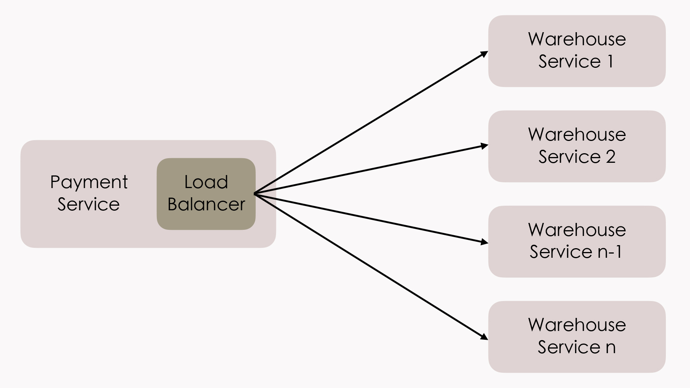
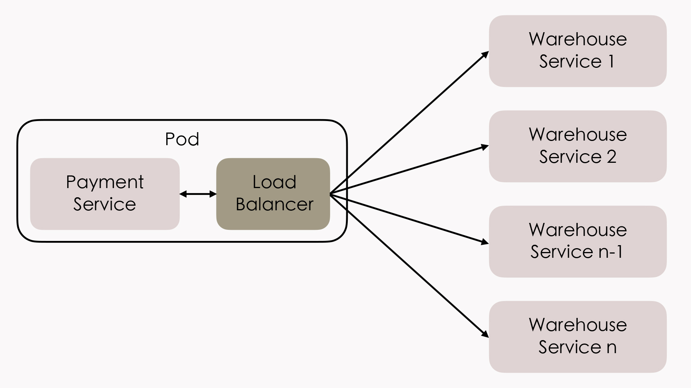

- 00 _导读 _ 什么是“The Fenix Project”？.md
- 00 开篇词 _ 如何构建一个可靠的分布式系统？.md
- 01 _ 原始分布式时代：Unix设计哲学下的服务探索.md
- 02 _ 单体系统时代：应用最广泛的架构风格.md
- 03 _ SOA时代：成功理论与失败实践.md
- 04 _ 微服务时代：SOA的革命者.md
- 05 _ 后微服务时代：跨越软件与硬件之间的界限.md
- 06 _ 无服务时代：“不分布式”云端系统的起点.md
- 07 _ 远程服务调用（上）：从本地方法到远程方法的桥梁.md
- 08 _ 远程服务调用（下）：如何选择适合自己的RPC框架？.md
- 09 _ RESTful服务（上）：从面向过程编程到面向资源编程.md
- 10 _ RESTful服务（下）：如何评价服务是否RESTful？.md
- 11 _ 本地事务如何实现原子性和持久性？.md
- 12 _ 本地事务如何实现隔离性？.md
- 13 _ 全局事务和共享事务是如何实现的？.md
- 14 _ 分布式事务之可靠消息队列.md
- 15 _ 分布式事务之TCC与SAGA.md
- 16 _ 域名解析系统，优化HTTP性能的第一步.md
- 17 _ 客户端缓存是如何帮助服务器分担流量的？.md
- 18 _ 传输链路，优化HTTP传输速度的小技巧.md
- 19 _ 如何利用内容分发网络来提高网络性能？.md
- 20 _ 常见的四层负载均衡的工作模式是怎样的？.md
- 21 _ 服务端缓存的三种属性.md
- 22 _ 分布式缓存如何与本地缓存配合，提高系统性能？.md
- 23 _ 认证：系统如何正确分辨操作用户的真实身份？.md
- 24 _ 授权（上）：系统如何确保授权的过程可靠？.md
- 25 _ 授权（下）：系统如何确保授权的结果可控？.md
- 26 _ 凭证：系统如何保证与用户之间的承诺是准确完整且不可抵赖的？.md
- 27 _ 保密：系统如何保证敏感数据无法被内外部人员窃取滥用？.md
- 28 _ 传输（上）：传输安全的基础，摘要、加密与签名.md
- 29 _ 传输（下）：数字证书与传输安全层.md
- 30 _ 验证：系统如何确保提交给服务的数据是安全的？.md
- 31 _ 分布式共识（上）：想用好分布式框架，先学会Paxos算法吧.md
- 32 _ 分布式共识（下）：Multi Paxos、Raft与Gossip，分布式领域的基石.md
- 33 _ 服务发现如何做到持续维护服务地址在动态运维中的时效性？.md
- 34 _ 路由凭什么作为微服务网关的基础职能？.md
- 35 _ 如何在客户端实现服务的负载均衡？.md
- 36 _ 面对程序故障，我们该做些什么？.md
- 37 _ 要实现某种容错策略，我们该怎么做？.md
- 38 _ 限流的目标与模式.md
- 39 _ 如何构建零信任网络安全？.md
- 40 _ 如何实现零信任网络下安全的服务访问？.md
- 41 _ 分布式架构中的可观测到底说的是什么？.md
- 42 _ 分析日志真的没那么简单.md
- 43 _ 一个完整的分布式追踪系统是什么样子的？.md
- 44 _ 聚合度量能给我们解决什么问题？.md
- 45 _ 模块导学：从微服务到云原生.md
- 46 _ 容器的崛起（上）：文件、访问、资源的隔离.md
- 47 _ 容器的崛起（下）：系统、应用、集群的封装.md
- 48 _ 以容器构建系统（上）：隔离与协作.md
- 49 _ 以容器构建系统（下）：韧性与弹性.md
- 50 _ 应用为中心的封装（上）：Kustomize与Helm.md
- 51 _ 应用为中心的封装（下）：Operator与OAM.md
- 52 _ Linux网络虚拟化（上）：信息是如何通过网络传输被另一个程序接收到的？.md
- 53 _ Linux网络虚拟化（下）：Docker所提供的容器通讯方案有哪些？.md
- 54 _ 容器网络与生态：与CNM竞争过后的CNI下的网络插件生态.md
- 55 _ 谈谈Kubernetes的存储设计理念.md
- 56 _ Kubernetes存储扩展架构：一个真实的存储系统如何接入或移除新存储设备？.md
- 57 _ Kubernetes存储生态系统：几种有代表性的CSI存储插件的实现.md
- 58 _ Kubernetes的资源模型与调度器设计.md
- 59 _ 透明通讯的涅槃（上）：通讯的成本.md
- 60 _ 透明通讯的涅槃（下）：控制平面与数据平面.md
- 61 _ 服务网格与生态：聊聊服务网格的两项标准规范.md
- 63 _ 基于Spring Boot的单体架构.md
- 64 _ 基于Spring Cloud的微服务架构.md
- 65 _ 基于Kubernetes的微服务架构.md
- 66 _ 基于Istio的服务网格架构.md
- 67 _ 基于云计算的无服务架构.md
- 春节特别放送（上）_ 有的放矢，事半功倍.md
- 春节特别放送（下）_ 积累沉淀，知行合一.md
- 用户故事 _ 詹应达：持续成长，不惧未来.md
- 结束语 _ 程序员之路.md
- 结课测试 _ 一套习题，测出你的掌握程度.md
35 _ 如何在客户端实现服务的负载均衡？
你好，我是周志明。这节课我们来学习客户端负载均衡的实现原理。
在正式开始讨论之前，我们先来区分清楚几个容易混淆的概念，分别是前面两讲中我介绍过的服务发现、网关路由，以及这节课要探讨的负载均衡，还有在下一讲中将会介绍的调用容错。这几个技术名词都带有“从服务集群中寻找到一个合适的服务来调用”的含义，那么它们之间的差别都体现在哪呢？下面我就通过一个具体的案例场景来给你说明一下。
理解服务发现、网关路由、负载均衡、调用容错的具体区别
假设，你目前身处广东，要上Fenix’s Bookstore购买一本书。在程序业务逻辑里，购书的其中一个关键步骤是调用商品出库服务来完成货物准备，在代码中该服务的调用请求为：
PATCH https://warehouse:8080/restful/stockpile/3
{amount: -1}
假设Fenix’s Bookstore是个大书店，在北京、武汉、广州的机房均部署有服务集群，那么此时按顺序会发生以下事件：
- 首先是将warehouse这个服务名称转换为了恰当的服务地址。
注意，这里的“恰当”是个宽泛的描述，一种典型的“恰当”就是因为调用请求来自于广东，DNS层面的负载均衡就会优先分配给传输距离最短的广州机房来应答。
其实按常理来说，这次出库服务的调用应该是集群内的流量，而不是用户浏览器直接发出的请求。所以尽管结果都一样，但更接近实际的情况应该是用户访问首页时，已经被DNS服务器分配到了广州机房，请求出库服务时，应优先选择同机房的服务进行调用，此时该服务的调用请求就变为：
PATCH https://guangzhou-ip-wan:8080/restful/stockpile/3
- 然后，广州机房的服务网关将该请求与配置中的特征进行比对，由URL中的“/restful/stockpile/**”得知该请求访问的是商品出库服务。因此，将请求的IP地址转换为内网中warehouse服务集群的入口地址：
PATCH https://warehouse-gz-lan:8080/restful/stockpile/3
- 由于集群中部署有多个warehouse服务，所以在收到调用请求后，负载均衡器要在多个服务中根据某种标准或均衡策略（可能是随机挑选，也可能是按顺序轮询，或者是选择此前调用次数最少那个，等等），找出要响应本次调用的服务，我们称其为warehouse-gz-lan-node1。
PATCH https://warehouse-gz-lan-node1:8080/restful/stockpile/3
- 接着，访问warehouse-gz-lan-node1服务，没有返回需要的结果，而是抛出了500错。
HTTP/1.1 500 Internal Server Error
- 那么根据预置的故障转移（Failover）策略，负载均衡器会进行重试，把调用分配给能够提供该服务的其他节点，我们称其为warehouse-gz-lan-node2。
PATCH https://warehouse-gz-lan-node2:8080/restful/stockpile/3
- 最后，warehouse-gz-lan-node2服务返回商品出库成功。
HTTP/1.1 200 OK
所以，从整体上看，前面步骤中的1、2、3、5，就分别对应了服务发现、网关路由、负载均衡和调用容错；而从细节上看，其中的部分职责又是有交叉的，并不是注册中心就只关心服务发现，网关只关心路由，均衡器只关心负载均衡。
比如，步骤1服务发现的过程中，“根据请求来源的物理位置来分配机房”这个操作，本质上是根据请求中的特征（地理位置）来进行流量分发，这其实是一种路由行为。在实际的系统中，DNS服务器（DNS智能线路）、服务注册中心（如Eureka等框架中的Region、Zone概念）或者负载均衡器（可用区负载均衡，如AWS的NLB，或Envoy的Region、Zone、Sub-zone）里都有可能实现路由功能。
而且除此之外，你有没有感觉到这个网络调用的过程好像过于繁琐了，一个从广州机房内网发出的服务请求，绕到了网络边缘的网关、负载均衡器这些设施上，然后再被分配回内网中另外一个服务去响应。这不仅消耗了带宽，降低了性能，也增加了链路上的风险和运维的复杂度。
可是，如果流量不经过这些设施，它们相应的职责就无法发挥作用了：如果不经过负载均衡器的话，甚至连请求应该具体交给哪一个服务去处理都无法确定。
所以既然如此，我们有什么办法可以简化这个调用过程吗？这就需要用到客户端负载均衡器了。
客户端负载均衡器的工作原理
我们知道，对于任何一个大型系统来说，负载均衡器都是必不可少的设施。以前，负载均衡器大多只部署在整个服务集群的前端，将用户的请求分流到各个服务进行处理，这种经典的部署形式现在被称为集中式的负载均衡（在第20讲中，我已经给你介绍过这种经典的负载均衡的工作原理，你可以去复习一下）。
而随着微服务的日渐流行，服务集群收到的请求来源就不再局限于外部了，越来越多的访问请求是由集群内部的某个服务发起，由集群内部的另一个服务进行响应的。对于这类流量的负载均衡，既有的方案依然是可行的，但针对内部流量的特点，直接在服务集群内部消化掉，肯定是更合理、更受开发者青睐的办法。
由此，一种全新的、独立位于每个服务前端的、分散式的负载均衡方式正逐渐变得流行起来，这就是本节课我们要讨论的主角：客户端负载均衡器（Client-Side Load Balancer）。

客户端负载均衡器的理念提出以后，此前的集中式负载均衡器也有了一个方便与它对比的名字，“服务端负载均衡器”（Server-Side Load Balancer）。
从上图中，你其实能够清晰地看到这两种均衡器的关键差别所在：服务端负载均衡器是集中式的，同时为多个节点提供服务，而客户端负载均衡器是和服务实例一一对应的，而且与服务实例并存于同一个进程之内。这能为它带来很多好处，比如说：
- 均衡器与服务之间的信息交换是进程内的方法调用，不存在任何额外的网络开销。
- 客户端均衡器不依赖集群边缘的设施，所有内部流量都仅在服务集群的内部循环，避免出现前面提到的，集群内部流量要“绕场一周”的尴尬局面。
- 分散式的均衡器意味着它天然避免了集中式的单点问题，它的带宽资源将不会像集中式均衡器那样敏感，这在以七层均衡器为绝对主流、不能通过IP隧道和三角传输这样的方式来节省带宽的微服务环境中，显得更具优势。
- 客户端均衡器要更加灵活，能够针对每一个服务实例单独设置均衡策略等参数。比如访问某个服务是否需要具备亲和性，选择服务的策略是随机、轮询、加权还是最小连接，等等，都可以单独设置而不影响其他服务。
- ……
但是你也要清楚，客户端均衡器并不是银弹，它的缺点同样是不少的：
- 它与服务运行于同一个进程之内，就意味着它的选型要受到服务所使用的编程语言的限制。比如，用Golang开发的微服务，就不太可能搭配Spring Cloud Load Balancer来一起使用，因为要为每种语言都实现对应的能够支持复杂网络情况的均衡器是非常难的。客户端均衡器的这个缺陷其实有违于微服务中，技术异构不应受到限制的原则。
- 从个体服务来看，由于客户端均衡器与服务实例是共用一个进程，均衡器的稳定性会直接影响整个服务进程的稳定性，而消耗的CPU、内存等资源也同样会影响到服务的可用资源。从集群整体来看，在服务数量达到成千乃至上万的规模时，客户端均衡器消耗的资源总量是相当可观的。
- 由于请求的来源可能是来自集群中任意一个服务节点，而不再是统一来自集中式均衡器，这就会导致内部网络安全和信任关系变得复杂，当入侵者攻破任何一个服务时，都会更容易通过该服务突破集群中的其他部分。
- 我们知道，服务集群的拓扑关系是动态的，每一个客户端均衡器必须持续跟踪其他服务的健康状况，以实现上线新服务、下线旧服务、自动剔除失败的服务、自动重连恢复的服务等均衡器必须具备的功能。由于这些操作都需要通过访问服务注册中心来完成，因此数量庞大的客户端均衡器需要一直持续轮询服务注册中心，这也会为它带来不小的负担。
- ……
代理客户端负载均衡器
在Java领域，客户端负载均衡器中最具代表性的产品，就是Netflix Ribbon和Spring Cloud Load Balancer了，随着微服务的流行，它们在Java微服务中已经积聚了相当可观的使用者。
而到了最近两三年，服务网格（Service Mesh）开始盛行，另一种被称为“代理客户端负载均衡器”（Proxy Client-Side Load Balancer，后面就简称“代理均衡器”）的客户端均衡器变体形式，开始引起不同编程语言的微服务开发者的共同关注，因为它解决了此前客户端均衡器的大部分缺陷。
代理均衡器对此前的客户端负载均衡器的改进，其实就是将原本嵌入在服务进程中的均衡器提取出来，放到边车代理中去实现，它的流量关系如下图所示：

这里你可以发现，虽然代理均衡器与服务实例不再是进程内通讯，而是通过虚拟化网络进行数据交换的，数据要经过操作系统的协议栈，要进行打包拆包、计算校验和、维护序列号等网络数据的收发等步骤（Envoy中支持使用Unix Domain Socket来进一步避免这种消耗），流量比起之前的客户端均衡器确实多经历了一次代理过程。
不过，Kubernetes严格保证了同一个Pod中的容器不会跨越不同的节点，相同Pod中的容器共享同一个网络和Linux UTS名称空间，因此代理均衡器与服务实例的交互，仍然要比真正的网络交互高效且稳定得多，代价很小。但它从服务进程中分离出来的收益则是非常明显的：
- 代理均衡器不再受编程语言的限制。比如说，要发展一个支持Java、Golang、Python等所有微服务应用的通用代理均衡器，就具有很高的性价比。集中不同编程语言的使用者的力量，也更容易打造出能面对复杂网络情况的、高效健壮的均衡器。即使退一步说，独立于服务进程的均衡器，也不会因为自身的稳定性而影响到服务进程的稳定。
- 在服务拓扑感知方面，代理均衡器也要更有优势。由于边车代理接受控制平面的统一管理，当服务节点拓扑关系发生变化时，控制平面就会主动向边车代理发送更新服务清单的控制指令，这避免了此前客户端均衡器必须长期主动轮询服务注册中心所造成的浪费。
- 在安全性、可观测性上，由于边车代理都是一致的实现，有利于在服务间建立双向TLS通讯，也有利于对整个调用链路给出更详细的统计信息。
- ……
所以总体而言，边车代理这种通过同一个Pod的独立容器实现的负载均衡器，就是目前处理微服务集群内部流量最理想的方式。只是服务网格本身仍然是初生事物，它还不够成熟，对程序员的操作系统、网络和运维方面的知识要求也比较高，但我们有理由相信，随着时间的推移，未来服务网格将会是微服务的主流通讯方式。
地域与区域
OK，最后，我想再和你探讨一个与负载均衡相关，但又不仅仅只涉及到负载均衡的概念：地域与区域。
不知道你有没有注意到，在与微服务相关的许多设施中，都带有Region、Zone参数，比如前面我提到过的服务注册中心Eureka的Region、Zone，边车代理Envoy中的Region、Zone、Sub-zone，等等。如果你有云计算IaaS的使用经历，你也会发现几乎所有的云计算设备都有类似的概念。
实际上，Region和Zone是公有云计算先驱亚马逊AWS提出的概念，我们分别来看看它们的含义。
Region是地域的意思，比如华北、东北、华东、华南，这些都是地域范围。
面向全球或全国的大型系统的服务集群，往往都会部署在多个不同的地域，就像是这节课开篇我设计的那个案例场景一样，它就是通过不同地域的机房，来缩短用户与服务器之间的物理距离，提升响应速度的；而对于小型系统来说，地域一般就只在异地容灾时才会涉及到。
这里你需要注意的是，不同的地域之间是没有内网连接的，所有流量都只能经过公众互联网相连，如果微服务的流量跨越了地域，实际上就跟调用外部服务商提供的互联网服务没有任何差别了。所以，集群内部流量是不会跨地域的，服务发现、负载均衡器也默认是不会支持跨地域的服务发现和负载均衡。
Zone是区域的意思，它是可用区域（Availability Zones）的简称。区域的意思是在地理上位于同一地域内，但电力和网络是互相独立的物理区域，比如在华东的上海、杭州、苏州的不同机房，就是同一个地域的几个可用区域。
同一个地域的区域之间具有内网连接，流量不占用公网带宽，因此区域是微服务集群内，流量能够触及的最大范围。但是，你的应用是只部署在同一区域内，还是部署到几个可用区域中，主要取决于你是否有做异地双活的需求，以及对网络延时的容忍程度。
- 如果你追求高可用，比如希望系统即使在某个地区发生电力或者骨干网络中断时，仍然可用，那你可以考虑将系统部署在多个区域中。这里你要注意异地容灾和异地双活的差别：容灾是非实时的同步，而双活是实时或者准实时的，跨地域或者跨区域做容灾都可以，但只能一般只能跨区域做双活，当然你也可以将它们结合起来同时使用，即“两地三中心”模式。
- 如果你追求低延迟，比如对时间有高要求的SLA应用，或者网络游戏服务器等，那就应该考虑将系统部署在同一个区域中。因为尽管内网连接不受限于公网带宽，但毕竟机房之间的专线容量也是有限的，难以跟机房内部的交换机相比，延时也会受物理距离、网络跃点等因素的影响。
当然，可用区域对应于城市级别的区域范围，在一些场景中仍然是过大了一些，即使是同一个区域中的机房，也可能存在不同的具有差异的子网络，所以部分的微服务框架也提供了Group、Sub-zone等做进一步的细分控制。这些参数的意思通常是加权或优先访问同一个子区域的服务，但如果子区域中没有合适的，还是会访问到可用区域中的其他服务。
另外，地域和区域原本是云计算中的概念，对于一些中小型的微服务系统，尤其是非互联网的企业信息系统来说，很多仍然没有使用云计算设施，只部署在某个专有机房内部，只为特定人群提供服务，这就不需要涉及地理上的地域、区域的概念了。这时你完全可以自己灵活延伸拓展Region、Zone参数的含义，达到优化虚拟化基础设施流量的目的。
比如说，将框架的这类设置与Kubernetes的标签、选择器相配合，实现内部服务请求其他服务时，优先使用同一个Node中提供的服务进行应答，以降低真实的网络消耗。
小结
这节课，我们从“如何将流量转发到最恰当的服务”开始，讨论了客户端负载均衡器出现的背景、它与服务端负载均衡器之间的差异，以及通过代理来实现客户端负载均衡器的差别。
最后，借助本节课建立的上下文场景，我还给你介绍了地域与可用区域的概念。这些概念不仅在购买、使用云计算服务时会用到，还直接影响到了应用程序中路由、负载均衡的请求分发形式。
一课一思
你认为“负载均衡”这件事情，是负责设计程序的架构师、负责实现程序的开发者，还是负责部署程序的运维人员为主去考虑的呢？
欢迎在留言区分享你的思考和见解。如果你觉得有收获，也欢迎把今天的内容分享给更多的朋友。感谢你的阅读，我们下一讲再见。
© 2019 - 2023 Liangliang Lee. Powered by gin and hexo-theme-book.